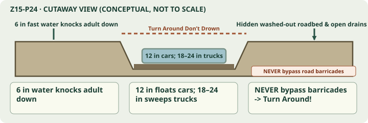

Z15-P24 · Disaster scenarios · New manuscript
Obey Turn Around Don't Drown: 6-inch walking and 12-inch vehicle flood physics
Prevent the #1 cause of U.S. flood deaths by keeping people and vehicles completely out of moving or standing floodwater.
When it applies · Flooded city underpasses, country roads, low-water bridges, trails, and submerged parking lots day or night.
Equipment · Alternate high-ground route plan and absolute refusal to bypass road barricades.

Actions
- Respect proven floodwater force thresholds: just 6 inches of fast-moving water can knock a healthy adult off their feet, 12 inches of rushing water floats and sweeps away most passenger cars, and 18 to 24 inches carries away heavy SUVs and pickup trucks effortlessly.[D05, T07, N10]
- NEVER drive around "Road Closed" barricades or into flooded underpasses/roads—especially at night when murky water hides completely washed-out pavement, open storm manholes, and deep sinkholes beneath an apparently shallow surface.[D05, N10]
- Turn around immediately to an open high-ground detour, OR wait safely on high dry ground until waters recede and highway crews verify bridge/roadbed integrity.[D05, N10]
Failure recognition · Driving an SUV past a flashing barricade across a flooded creek road at night because "it looks only a few inches deep," dropping into a washed-out culvert.[D05, N10]
Verify · Confirm zero walking or driving into floodwater, zero barricade bypassing, and extra night caution near low crossings.[D05, N10]
Stop or change course · ANY water covering a roadway where pavement markings and roadbed stability cannot be verified is an automatic turnaround stop.[D05, N10]
Evidence and editorial notes
- D05 · FEMA / Ready.gov · Floods (current web edition)
- Section: Floods > Flash Flood Evacuation, Turn Around Don't Drown, and Re-Entry · Conditions: River flooding, urban flash flooding, dam/levee risk, and post-flood return
Support: Evacuate early when ordered, move to higher ground immediately on Flash Flood Warnings, never walk or drive through floodwater (6 inches knocks down adults; 12 inches carries most cars), and never enter flood-damaged homes until electrical, gas, and structural hazards are cleared.
Limitations: Floodwaters commonly contain raw sewage, fuel, submerged debris, and energized downed wiring. · Conflicting evidence: None; aligns with T07, T16, and N10.
Editorial note: Core flood evacuation, water-avoidance, and safe re-entry evidence. · Specialist reviewer: Emergency management and flood hydrology
Primary source · checked 2026-11-24 - N10 · NWS · Turn Around Don't Drown (current web edition)
- Section: Turn Around Don't Drown > Flooded Crossings and Terrain Detours · Conditions: Navigating around flooded streams, washes and submerged roads
Support: Water barriers and flooded crossings conceal washed-out banks, swift undercurrents and deep holes; detour along verified dry high-ground routes or hold in a safe elevated spot.
Limitations: Applies equally to foot and vehicle navigation. · Conflicting evidence: Aligns with B014-P12 and T07.
Editorial note: Connects navigation rerouting to flood and water-barrier boundaries. · Specialist reviewer: Search and rescue and emergency management
Primary source · checked 2026-11-24 - T07 · FEMA · Flood Hazard Information Sheet (agency PDF)
- Section: How to stay safe when a flood threatens; take an active role · Conditions: U.S. household flood preparedness and evacuation
Support: Prepare contacts, medication and supplies. Heed evacuation instructions and avoid flooded roads.
Limitations: Six inches of moving water can knock down an adult; shallow-looking crossings hide road washouts. · Conflicting evidence: None; aligns with NWS-FLOOD.
Editorial note: Supports flood turnaround and evacuation decision thresholds. · Specialist reviewer: Emergency management
Primary source · checked 2026-11-24
Source lineage · NWS Turn Around Don't Drown and Ready.gov Floods; new manuscript · Classification · New manuscript.